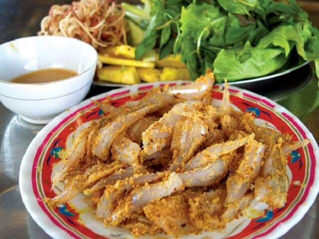

Làng chài Nam Ô, một làng nhỏ của quận Liên Chiểu, nằm kề bên khu vực cửa sông Cu Đê dưới chân đèo Hải Vân với nguồn hải sản tươi, phong phú quanh năm. Chính vì vậy mà nơi đây có rất nhiều món hải sản ngon, trong đó không thể không nhắc tới món gỏi cá Nam Ô Đà Nẵng, và đây được xem là một trong những món ăn đặc sản của Đà Nẵng.
Từng miếng thịt cá tươi roi rói, ngọt sớt được ướp với thính gạo rang, lạc, vừng bùi bùi béo ngậy cuộn tròn ăn với rổ rau rừng, chấm vào bát nước chấm chua cay, ngòn ngọt, sền sệt thì ngon hết sảy.
Cá để chế biến món gỏi là cá mòi, cá tớp, cá cơm...Ngon và thích hợp nhất là cá trích, vì cá này thịt có vị ngọt, săn chắc. Loại cá nhiều dinh dưỡng nhất nhì hàng hải sản. Thiên nhiên đã ban tặng cho người dân nơi đây một nguồn cá phong phú, mỗi đợt thuyền về sáng sớm đem lại cho họ một lượng cá trích quanh năm béo tròn và tươi ngon.
Sau khi loại rửa sạch, cá trích loại bỏ đầu đuôi, lọc thịt và cắt đôi, ướp với gừng, riềng, tỏi, ớt bằm nhuyễn và ngâm trong nước dùng có nước mắm. Gia vị ướp cá được coi là quan trọng nhất, quyết định đến hương vị của món ăn, gồm các loại: chanh, ớt, tỏi, gừng, mè, đậu phộng rang. Trong đó, ớt tỏi và gừng được giã thật nhuyễn.
Gỏi cá Nam Ô Đà Nẵng không giống với các loại gỏi thông thường khác. Chúng có thể được chế biến thành món gỏi khô và gỏi ướt. Mỗi cách làm lại cho người dùng cảm nhận một hương vị riêng biệt.
Trước tiên, những con cá còn tươi cắt bỏ đầu, ruột và phần đuôi sau đó đánh vảy, rửa sạch. Mặc dù không phải là loại cá có mùi tanh khó chịu tuy nhiên, cá vẫn sẽ được rửa qua với nước muối và giấm, vừa loại bỏ máu cũng như làm dịu mùi để bất kỳ ai cũng có thể thưởng thức. Không chỉ vậy, việc ngâm với giấm chua còn giúp miếng cá trắng và giòn dai hơn. Để cá thật ráo nước mới dùng dao khứa dọc theo lườn cá, chỉ lấy phần thịt lưng của cá. Sau đó, thái cá thành từng lát mỏng. Lát cá được thái ra phải có đủ phần thịt hai bên và nơi xương sống chính giữa, để khi thưởng thức có thể cảm nhận được hết vị ngọt lẫn độ giòn sừng sựt của thịt cá.
Ướp những lát cá mỏng vào trong hỗn hợp gừng, tỏi, ớt giã nhuyễn, mì chính, chanh, giấm gạo. Trộn đều và ngâm cá trong khoảng 10 – 15 phút, tiếp tục vớt cá đã ngấm gia vị ra bóp ráo chuẩn bị làm món gỏi khô và ướt.
Với gỏi khô không thêm nước mắm mà trộn với hỗn hợp bánh tráng, đậu, mè đã giã nhuyễn. Chính bánh tráng giã nhuyễn sẽ làm cá trở nên khô ráo hơn, còn mè và đậu phộng sẽ làm tăng thêm vị béo, thơm.
Còn về gỏi ướt, cá cũng được phile thành từng miếng như gỏi khô. Nhưng thay vì ướp như gỏi khô thì cá sẽ được ướp cùng các loại gia vị như riêng, gừng, tỏi, ớt và ngâm trong nước mắm thêm chút đường. Bật mí nhé, loại mắm mà dùng để làm món gỏi cá Nam Ô ngon nhất Đà Nẵng này là phải dùng mắm do chính người dân Nam Ô làm ra. Bí quyết riêng của người dân nơi đây đó nhé. Và ở đây nổi tiếng nhất có Làng nghề nước mắm Nam Ô
Để món gỏi cá trích khô lẫn ướt đủ đầy hương vị, điều quan trọng nhất là không thể thiếu món nước chấm hảo hạng. Cách làm nước chấm này cũng rất khác lạ. Cá trước khi đem ướp phải được vắt khô một chút để ra phần nước, phần nước cá này sẽ được pha cùng nước mắm Nam Ô, gừng, tỏi, riềng, ớt cay, chút đường, chanh và chút bột năng đun sôi để tạo độ quánh dẻo.

Để ăn kèm, cần chuẩn bị một rổ rau. Rau ăn kèm với gỏi cá Nam Ô Đà Nẵng cũng khác so với rau sống khác vì có thêm một số loại rau rừng mà chỉ có người dân bản địa nơi đây biết, đi hái và bán như là cóc rừng, lành ngạnh, lá trâm, lá dừng cùng với xà lách, đinh lăng, tía tô, chuối xanh, dưa chuột, xoài chua.
Khi ăn, có thể cuộn cùng bánh đa nem như cách ăn bánh xèo miền Trung, hoặc có thể kẹp cùng bánh tráng nướng. Chấm với nước sốt chua cay, miếng gỏi đưa vào miệng vừa thơm, vừa ngọt. Vị cá lại bùi bùi của lạc, của thính ăn với rau sống không bao giờ biết ngán.
Khi thưởng thức, đặt rau lên bánh lề, bỏ gỏi cá lên trên và cuộn lại, chấm trong chén nước chấm, cứ thế đưa lên miệng. Và chắc chắn một điều, khi đã biết ăn gỏi cá trích nơi này rồi du khách sẽ nhớ mãi và hi vọng được thêm một lần quay lại thưởng thức.
Địa chỉ quán ăn
Quán Gỏi cá Tấn: 464 Điện Biên Phủ, Thanh Khê, Đà Nẵng
Quán Gỏi cá Sáu Hào: 232 Trần Cao Vân, quận Thanh Khê, Đà Nẵng
Gỏi cá Thanh Hương: 1029 Nguyễn Lương Bằng, Q. Liên Chiều, Đà Nẵng.